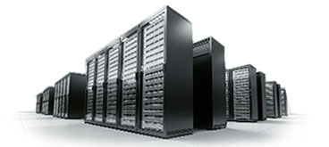
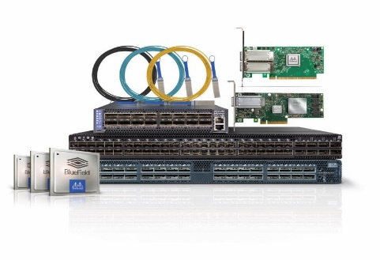
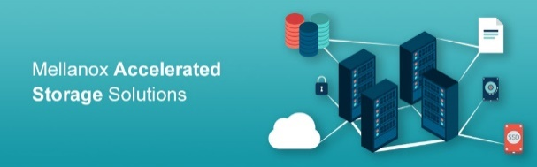
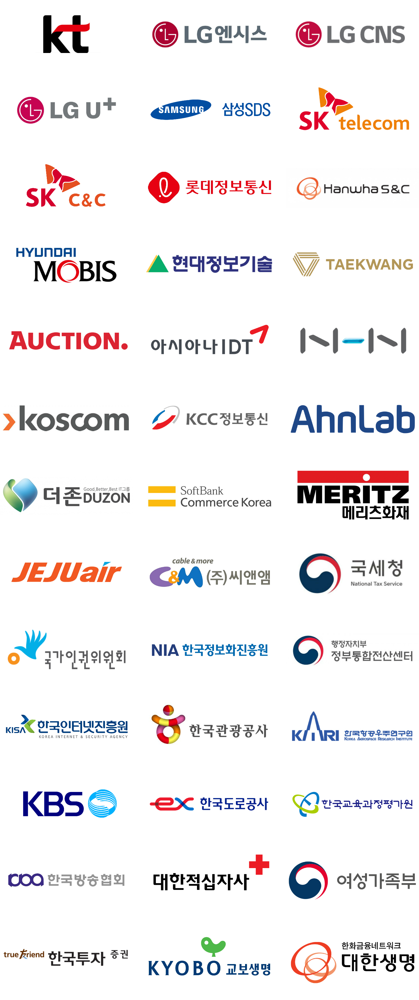

홈 < 사업소개 < 주요 제품 (파트너)
Juniper
라우터(Router)
T4000
- - HA 소프트웨어
- - 광 전송 통합
- - 로지컬 라우팅 기능
- - 모든 규모의 가상화 지원
- - 광범위한 인터페이스 지원
- - HA(High-Availability) 하드웨어
- - 멀티테라비트 용량 및 멀티섀시 확장성
- - 견고하고 기능이 풍부한 모듈형 소프트웨어
- - 프로그래머블 ASIC 기반 PFE(Packet Forwarding Engine)를 통한 탁월한 패킷 처리

PTX Series
- - HA 소프트웨어
- - 광 전송 통합
- - 로지컬 라우팅 기능
- - 모든 규모의 가상화 지원
- - 광범위한 인터페이스 지원
- - HA(High-Availability) 하드웨어
- - 멀티테라비트 용량 및 멀티섀시 확장성
- - 견고하고 기능이 풍부한 모듈형 소프트웨어
- - 프로그래머블 ASIC 기반 PFE(Packet Forwarding Engine)를 통한 탁월한 패킷 처리
MX2008 / MX2010 / MX2020
- - 현재와 미래 지향의 브로드밴드 서비스가 용이하도록 강력한 브로드밴드 네트워크 게이트웨이 기능 제공
- - 광범위한 하드웨어와 소프트웨어 기능을 탑재하면서 무중단 네트워크 가용성 확립
- - 성능 및 분석, 관리를 위한 소자 수준의 데이터 수집과 관제
- - 표준 기반에 안전한 인터네크워킹에서 풍부한 기능을 지원하도록 광범위한 VPN 툴킷 탑재
- - 최고의 시스템 용량, 최상의 FIB 확장성, 고밀도 100GbE 인터페이스, DWDM 및 IP/Optical 지원
- - 가상과 실상 네트워크를 상호 연결하면서 가상 네트워크에서 서로 다른 기술이 동작하는 이상적인 SDN 게이트웨이
MX960
- - 모듈형OS/VPLS멀티호밍/무중단 라우팅/MPLS FRR
- - 완전 이중화된 하드웨어/데이터 플레인과 컨트롤 플레인 분리
- - 차세대 I-chip ASIC/보다 높은 수준의 QoS 기능
- - 추가 패킷 처리 유연성/향상된 멀티캐스트 성능
- - 향후 3-5년 동안 JUNOS® 소프트웨어 기능을 수용할 수 있는 추가 마이크로코드 용량
- - 루트 룩업, 넥스트 홉, IFL 확장, 인터페이스 어카운팅 등과 같은 기능 향상 확장
- - Layer2 및 Layer3 Ethernet 서비스 동시 지원
MX240 / MX480
- - 대역폭 : 16RU 섀시 한 대에서 최대 2.6Tbps의 업계 최대 용량을 제공하여 계속해서 급증하는 대역폭 요구를 지원
- - 가입자 : 통신사업자가 증가하는 가입자 기반을 지원할 수 있도록 확장 가능. 패킷 포워딩 엔진당 최대가입자 32,000명 지원
- - 서비스 : 통신사업자가 증가하는 가입자 기반을 지원할 수 있도록 확장 가능. 패킷 포워딩 엔진당 최대가입자 32,000명 지원
스위치(Switch)
QFX10008 / QFX10016
- - 단일 섀시에서 최대 480개 Line-Rate 100GbE 포트 지원
- - 200Tbps까지 확장이 가능한 96Tbps의 Layer2와 Layer3 성능
- - 10GbE, 40GbE, 100GbE 지원 및 400GbE 예정으로 탁월한 투자보호
- - Midplane없는 직교의 상호연결 아키텍처로 시스템 지속성
- - 아키텍처 기반의 가상 출력 큐(VoQ)로 Head-of-Line 블럭킹 제거
- - Layer2와 Layer3에 대한 Juniper MC-LAG와 Layer3 패브릭을 포함하는 유연한 네트워크 구조
- - APIs로 프로그래밍이 용이하도록 구성한 주니퍼 가상화 개방 네트워크 운영체제 프레임워크
- - 무중단 라우팅(NSR), 무중단 브리징(NSB), 적절한 루트 엔진 절체(GRES)에 의한 고가용성
- - 이벤트 스크립트, Python, Chef, Puppet, 그리고 운영에 의한 풍부한 자동화 기능
QFX10002
- - 포트당 100ms의 하이브리드 메모리 큐브(HMC) 메모리를 이용하는 딥 버퍼로 독보적인 Congestion 관리
- - 2U 크기에 60개의 100GbE 포트와 72개의 40GbE 포트까지 지원
- - 6Tbps까지 Layer2와 Layer3 성능 지원
- - 단일 플랫폼에서 10GbE, 40GbE, 100GbE 동시지원으로 탁월한 투자 보호
- - 최상의 논리적 L2/L3 확장 – 1백 만 개 MAC 주소, 2백 만 개 호스트 경로, 2백 만 개 FIB 포워딩 테이블
- - MAC과 ACL을 위해 PFE당 칩 자체 메모리
EX9204 / EX9208 / EX9214
- - TCO 절감
- - 보안 위험 관리
- - 캐리어급 안정성
- - 애플리케이션 제어
- - 가상화 : 버추얼 섀시 기술을 채용
- - 섀시당 최대 400개의 유선속도 10기가빗 이더넷 포트
EX-Series
- - 10GbE 탑-오브-랙 데이터센터 액세스 구축을 위한 높은 에너지 효율의 컴팩트 솔루션을 제공.
- - 브랜치 오피스와 캠퍼스 네트워크에 액세스 레이어 구축 시 이상적인 제품.
- 소규모 LAN들에 저집적도 액세스 구축을 시행하는데 적합한 하이 퍼포먼스 스탠드얼론 솔루션을 제공.
- 데이터센터 및 캠퍼스환경에서 요구되는 강력한 확장성을 제공하는 하이 퍼포먼스 솔루션.
- EX4500 이더넷 스위치 라인은 고집적도 10Gbps 데이터 센터, 캠퍼스, 통신사업자 구축을 지원하는 뛰어난 확장성과 하이 퍼포먼스를 제공하는 컴팩트 플랫폼.
- 고집적 캠퍼스 어그리게이션 및 소규모 캠퍼스 구축을 위한 확장 가능한 10GbE
보안장비
SRX5400 / SRX5600 / SRX5800
- 서비스 게이트웨이는 최대 60Gbps의 방화벽 및 15Gbps의 IDP를 지원하며, 엔터프라이즈 데이터센터를 보호하고 보안 솔루션을 통합하기에 적합한 제품.
- 서비스 게이트웨이는 최대 120Gbps의 방화벽 및 30Gbps의 IDP 및 초당 350,000개의 새로운 연결을 지원.
- - 확장 가능한 성능
- - 완벽하게 통합된 UTM
- - 네트워크 세그먼트 분할
- - 시스템 및 네트워크 장애 내구성
- - 인터페이스 유연성
- - 강력한 라우팅 엔진
- - 종합적인 위협 차단
- - 시스템 및 네트워크 장애 내구성
SRX3400 / SRX3600
- - 서비스 게이트웨이는 최대 20Gbps의 방화벽, 6Gbps의 IPsec VPN 또는 6Gbps의 IPS를 비롯해 초당 175,000개의 연결을 지원할 수 있습니다.
- - 엔터프라이즈 인프라스트럭처, 데이터센터 또는 서버 팜 보호에 적합한 제품
- - 서비스 게이트웨이는 최대 30Gbps의 방화벽, 10Gbps의 IPsec VPN 또는 10Gbps의 IPS를 비롯해 초당 175,000개의 연결을 지원할 수 있습니다.
- - 대규모 엔터프라이즈 데이터센터 및 통신사업자 보호는 물론, 다양한 보안 솔루션들의 통합에 적합한 제품
- - 확장 가능한 성능 / 완벽하게 통합된 UTM
- - 네트워크 세그먼트 분할
- - 시스템 및 네트워크 장애 내구성
- - 인터페이스 유연성
- - 강력한 라우팅 엔진 / 종합적인 위협 차단
- - 시스템 및 네트워크 장애 내구성
SRX110 / SRX220 / SRX300 / SRX550
- 8개 10/100 이더넷 LAN 포트와 1개 USB 포트(3G USB 지원), UTM, 안티바이러스, 안티스팸, 고성능 웹 및 컨텐츠 차단
- VDSL/ADSL2+ 및 이더넷 WAN 인터페이스, 통합된 접근 제어(UAC) 및 컨텐츠 차단
- 2개 10/100/1000 이더넷, 6개 10/100 이더넷 LAN포트, 1개 Mini-PIM 슬롯, 2개 USB 포트(3G USB 지원)
- T1/E1, Serial, ADSL/2/2+, VDSL, G.SHDSL, 이더넷 SFP, 침입방지시스템, 사용자 행위기반 방화벽
- 5Gbps 라우팅, 방화벽 성능, 실시간 링크 성능에 기반한 Route/Link Failover, Web 2.0을 포함한 3500개 이상 Layer3-7 응용서비스 감지
- 10개 고정 이더넷 포트(6개 10/100/1000 copper, 4SFP), 2개 Mini-PIM 스롯, 6개 GPIM 슬롯 또는 다중 GPIM과 XPIM 조합
SRX1400 / SRX1500 / SRX4100 / SRX4200 / SRX4600
- 10GbE 환경에 적합한 성능, 전문적 수준의 네트워킹 보안 서비스, 통합된 보안 서비스, 제어와 데이터 영역의 분리, 차세대 방화벽 서비스, 애플리케이션 보안, UTM, IPS, C&C 대응을 위한 통합된 위협 대응 기능
- 9Gbps의 방화벽 성능, 애플리케이션 관리 및 제어, 3Gbps IPS, 안티바이러스, 안티스팸, Spotlight Secure, Sky Advanced 위협방지, 4Gbps IPSec VPN, Secure boot, 섀시 클러스터
- 20Gbps/40Gbps의 방화벽 성능, 7Gbps/15Gbps 애플리케이션 관리 및 제어, 7Gbps/15Gbps IPS, 안티바이러스, 안티스팸, Spotlight Secure, Juniper Sky Advanced 위협방지, 5Gbps/96Gbps IPSec VPN, Secure boot, 섀시 클러스터
- 75Gbps의 방화벽 성능, 20Gbps 애플리케이션 관리 및 제어, 20Gbps IPS, 안티바이러스, 안티스팸, Spotlight Secure, Juniper Sky Advanced 위협방지, 16Gbps IPSec VPN, Secure boot, 섀시 클러스터
Genband
C3 (Call Control)
- - 효율적인 전송 및 중앙화된 관리를 위한 분산된 플랫폼
- - Any to any Service: TDM / IP / ATM
- - ANSI, ITU, ETSI 등 주요 ISUP를 비롯한 지능망 및
- - 각종 VoIP 표준 지원
- - 뛰어난 라우팅 기능 및 성능(Class 4 Tandem 및 국제용 스위치로 적합
- - 성능 및 확장성
- · 서버 단위 증설로 성능 및 용량 확장
- · 서버당 50~1M BHCA 성능
- · 최대 16 pair 증설 가능
- · Gateway 수용 최대 63대의 G9 MG 또는 256대의 H.248 MG 수용
- - Reference: ARBINET
- · 수백만 BHCA 트래픽
- · 100% Least cost routing
- · ITU, ETSI, ANSI, and National 트래픽 연동
G9 (Media Gateway)
- - 듀얼 스위칭 패브릭
- · 104K DSO Circuit Matrix
- · 25G Ethernet Packet Matrix
- - 다양한 인터페이스 지원
- · E1, STM1
- · Giga optical or copper
- · 다양한 코덱 지원: G.711, G.729, G.723.1, G.726, AMBE+2, AMR, AMR-WB, EVRC, EVRC-B, T.30, T.38, V.152 VBD, UDI, CSD
- - IMS 지원
- · IM-MGW: 3GPP/ETSI Mn, Mb/IP, NboIP MRFP: ETSI Mp, Mb/IP transcoding, IVR, conference, LI
- · BGF: TISPAN/ETSI/3GPP la/lx/lq, Mb, lz, li/lci, Di
Arbor
Peakflow SP CP
- - 35K flows/second (최대 100K fps peak)
- - 최대 5대 라우터의 Flow collection 라이센스
- - 최대 2대의 TMS 연동 라이센스
- - 2 million BGP routes(300K/라우터)
- - Forensic Graph/Raw flow 제공
G9 (Media Gateway)
- - 통신사업자 수준의 애플리케이션 인텔리전스 및 위협 완화
- · 높은 수준의 위협 식별 기능에 패킷 수준의 분석 기능을 결합하여 문제 해결 속도를 높여주며, Peakflow SP의 임베디드 완화 기술을 보완
- - 뛰어난 성능 및 확장성
- · 네트워크의 중요한 부분을 통과하는 애플리케이션에 대한 완벽한 가시성을 확보
- · 10G/40G 차단 성능 지원
- - 호스팅 공급업체
- · 기존 IDC 보안 제품을 보완하고 보호
Mellanox
기존 인터넷 인프라를 활용하여 WEB-Cache, WEBrkthr, 화상 시스템과 같은 기존 기술 및 신기술 Application을 활용한 솔루션
고성능, 초고속, 저지연 End-to-End 인터커넥트 솔루션
Mellanox 는 End to End 인터커넥트 턴키 솔루션으로 Adapter, Cable, Switch를 제공합니다.

- 적용분야
예측 가능한 데이터센터로 혁신 구축
Mellanox는 10 / 25 / 40 / 50 / 56 / 100Gb / s의 속도로 최고 성능의 개방형 이더넷 스위치 시스템을 제공합니다.
End-to-End 인터커넥트 솔루션
25GbE, 50GbE 및 심지어 100GbE에 이르는 완벽한 엔드 - 투 - 엔드 이더넷 연결 번들을 소개합니다.
Mellanox CloudX ™

가장 효율적이고 고성능이며 확장 가능한 클라우드를 구축 할 수 있게 해주는 참조 아키텍처 그룹입니다.
가장 효율적인 기계 학습 플랫폼 구현
Mellanox Solutions는 세계 최고의 인공 지능 및 기계 학습 플랫폼을 가속화합니다.
Mellanox, 새로운 스토리지 네트워크 구현
Mellanox는 10 / 25 / 40 / 50 / 56 / 100Gb /s 의 속도로 최고의 이상적인 스토리지 상호 연결 포트폴리오를 제공합니다.
고성능 컴퓨팅 (HPC)
Mellanox 솔루션, 고성능 컴퓨팅 플랫폼을 위한 최대 250 % 투자 수익률 제공합니다.
Adapter
Mellanox 인피니밴드 어댑터 카드
최고 수준의 데이터 센터 IT 성능, 효율성 및 확장성 제공

- - 세계적 수준의 클러스터 성능
- - 고성능 네트워킹 및 스토리지 액세스
- - 효율적인 컴퓨팅 리소스 사용
- - 가상화 된 오버레이 네트워크 (VXLAN 및 NVGRE)의 최첨단 성능
- - 서버 당 VM 증가 비율
- - 보장 된 대역폭과 낮은 대기 시간의 서비스
- - 신뢰할 수 있는 운송
- - 효율적인 I / O 통합, 데이터 센터 비용 및 복잡성 감소
- - 수십만 노드에 대한 확장
- - 세계적 수준의 클러스터 성능
- - 고성능 네트워킹 및 스토리지 액세스
- - 효율적인 컴퓨팅 리소스 사용
- - 가상화 된 오버레이 네트워크 (VXLAN 및 NVGRE)의 최첨단 성능
- - 서버 당 VM 증가 비율
- - 보장 된 대역폭과 낮은 대기 시간의 서비스
- - 신뢰할 수 있는 운송
- - 효율적인 I / O 통합, 데이터 센터 비용 및 복잡성 감소
- - 수십만 노드에 대한 확장
Switch
Mellanox 인피니밴드 스위치
FDR(56Gb/s), EDR(100Gb/s), HDR(200Gb/s) 제공
- - 업계 최고 수준의 에너지 효율성, 밀도 및 비용 절감 스위치
- - 초저 대기 시간
- - 실시간 확장형 네트워크 텔레 메 트리
- - InfiniBand 라우팅 및 InfiniBand를 이더넷 게이트웨이 기능에 사용하여 확장성 및 서브넷 격리
- - 패브릭 혼잡을 제거하여 성능 극대화
- - 클러스터, LAN 및 SAN 트래픽에 대한 세분화 된 QoS
- - 빠르고 쉬운 설치 및 관리
Cable
Mellanox LinkX ™ 인피니밴드 케이블 & 트랜시버
고성능을 위한 설계
- - ROI 개선
- - 최저 비용, 대기 시간 및 전력 소비를 위한 DAC
- - 200m에 달하는 AOCs
- - 유연성과 긴 거리를 위한 트랜시버
Adapter
Mellanox 이더넷 어댑터 카드
적은 비용으로 데이터센터 활용 확대
- - 업계 최고의 처리량 및 대기 시간 성능
- - 단일 어댑터에서 이더넷 전송 프로토콜을 통한 TCP / IP 및 RDMA를 지원하여 I / O 통합 활성화
- - 향상된 생산성 및 효율성
- - 업계 표준 SR-IO 가상화 기술을 지원하고 VM 보호 및 세부 수준의 I / O 서비스 수준을 응용 프로그램에 제공합니다.
- - 데이터 센터 네트워킹을위한 고 가용성 및 고성능
- - 표준 TCP / UDP / IP 및 iSCSI 스택과 호환되는 소프트웨어
- - 높은 수준의 실리콘 통합 및 외부 메모리 설계가 없어 저전력, 저비용 및 높은 신뢰성 제공
Switch
Mellanox 개방형 이더넷 스위치
비용 효율적인 예측 가능한 데이터 센터로 혁신 구축
- - 업계 최고 수준의 에너지 효율성, 밀도 및 비용 절감 스위치
- - 초저 대기 시간
- - 실시간 확장형 네트워크 텔레 메 트리
- - InfiniBand 라우팅 및 InfiniBand를 이더넷 게이트웨이 기능에 사용하여 확장성 및 서브넷 격리
- - 패브릭 혼잡을 제거하여 성능 극대화
- - 클러스터, LAN 및 SAN 트래픽에 대한 세분화 된 QoS
- - 빠르고 쉬운 설치 및 관리
Cable
Mellanox LinkX ™ 인피니밴드 케이블 & 트랜시버
고성능을 위한 설계
- - ROI 개선
- - 최저 비용, 대기 시간 및 전력 소비를 위한 DAC
- - 200m에 달하는 AOCs
- - 유연성과 긴 거리를 위한 트랜시버
Gigamon
기업 및 서비스사업자에게 서비스 및 시스템 보안에 관련된 Total솔루션 제공 서비스
- SSL 트래픽 (현재): 기업 트래픽의 25% ~ 35%
- 2017년, 네트워크 공격의 50% 이상 보안통제를 우회하기 위해 암호화된 트래픽을 이용할 것으로 예측
- 보안 및 성능관리 툴은 SSL 트래픽을 미 인지 하거나, 복호화 시 과부하 발생
- Large(2048b) ciphers는 현재 SSL 복호화 장비의 81% 성능 감소를 유발
기타제품
Citrix Netscaler
- - L4 ~ L7 Switching
- · 트래픽 분산 및 애플리케이션 가용성 보장
- · 애플리케이션 서버 상태 모니터링
- - 서버 성능 향상
- · 가속화 기술 및 TCP 최적화 기능
- · 클라이언트와 서버의 접속 및 효울성 향상
- · 데이터 압출 및 컨텐츠 캐싱 기능 제공
- · 애플리케이션 응답 속도 가속화
- - 애플리케이션 보안
- · 안전하지 않은 클라이언트 요청 차단
- · Dos/DDos 공격 차단 및 보호
- · 컨텐츠 검사 기능을 통한 공격 식별/차단
- - 다양한 부하 분산 지원
- · 다양한 부하 분산 방식 지원
Airdefense WIPS
- - 강력한 무선랜 공격 탐지 및 차단
- · Rouge AP 탐지 및 차단
- · Ad-Hoc 탐지 및 차단
- · 불법 무선 연결 차단
- · 무선 DoS 공격 탐지
- · 각종 무선 공격 차단
- · WEP Cloaking 방어
- - 무선랜 공격의 기록 및 저장
- · 탐지되는 모든 디바이스의 Log 저장
- · 불법 및 정상 디바이스간 접속, 통신 분석
- - 무선랜 트러블 슈팅
- · 무선랜 디바이스 위치 추적 기능
- · 무선 연결 및 AP 연결 테스트 및 진단
SecuWiz SSL VPN
- - 다양한 모바일 디바이스 지원
- · Windows Mobile, iOS, Android 지원
- · 삼성전자, LG전자 스마트폰 기본 탑재
- - 다양한 인증 기능 지원
- · 공인 인증서, 사설 인증서 지원
- · ID/Password, 모바일 OTP
- - 국산 암호화 알고리즘 추가 지원
- · SEED, ARIA 지원 (국정원 CC인증 획득)
- · 국제 표준 AES 지원
- - 다양한 서비스 지원 및 가속 기능
- · 스플릿 터널 지원, UDP/TCP 서비스 지원
- · WAN 가속 및 TCP 가속 기능 제공
주요고객사
Customer
아이크래프트는 Network, Server, Storage전반에 걸쳐 우호적인 비즈니스 협력관계를 형성하여 다양한 솔루션을 제공합니다.
